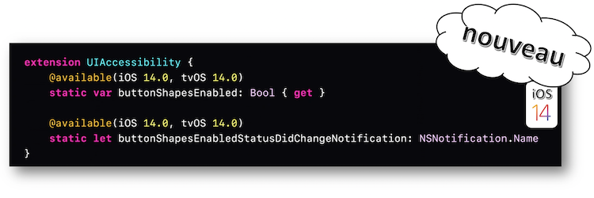
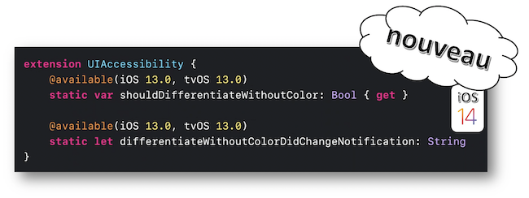
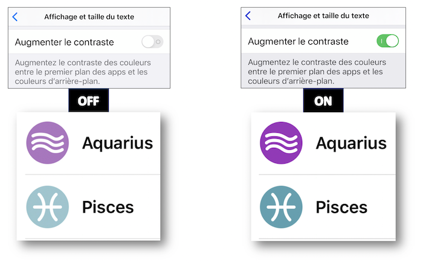
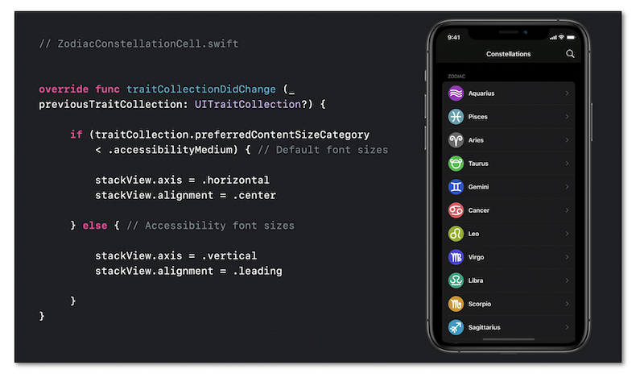
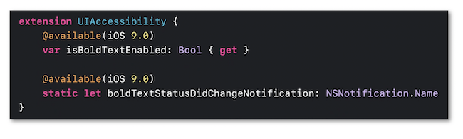
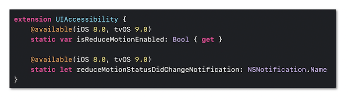
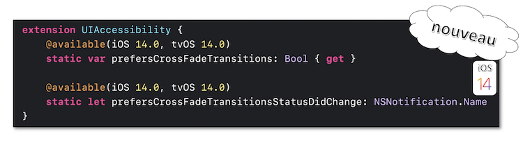
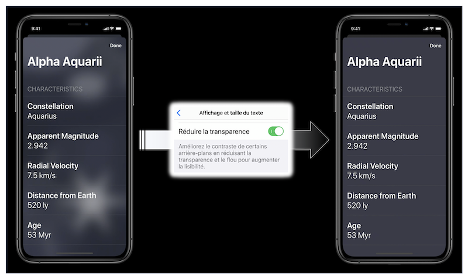

WWDC 2020 : Rendre un visuel accessible
Cette présentation visualisable sur le site développeur officiel d'Apple (session 10020) détaille quelques grands principes qui permettent au visuel d'une application d'être accessible.

Les principaux thèmes abordés sont décrits ci-dessous :
- Introduction (00:40)
- Couleur & formes
- ⟹ nouveauté iOS 14
- Lisibilité du texte
- Préférences utilisateur
- ⟹ nouveauté iOS 14
Couleur & formes #
🎬 (01:13)
Il vient rapidement à l'esprit de mettre en avant des informations visuelles par le biais des couleurs mais cela n'aura malheureusement pas l'impact désiré sur les personnes souffrant de dyschromatopsies par exemple.
Pour pallier ce problème, il est essentiel d'intégrer à la fois la notion de contraste de couleurs ainsi que les notions de formes et de contours pour assurer une accessibilité optimale au niveau visuel.
🎬 (02:15)
Même si l'apparence d'un bouton peut se faire uniquement à l'aide d'un contraste et d'un contour spécifiques, une nouveauté iOS 14 permet de mettre en avant ce type d'éléments par le biais de la préférence système Boutons avec contour dont on peut désormais connaître l'état (l'accès au réglage dans le menu existe depuis iOS 7).

Introduite avec iOS 13, l'option Différencier sans couleur a droit elle aussi à être accessible via le code en iOS 14.

Si besoin, de plus amples informations concernant les événements des options d'accessibilité et leur notification sont disponibles dans la partie guide pour les développeurs.
🎬 (03:26)
Les éléments SF Symbol sortis avec iOS 13 s'adaptent automatiquement au grossissement de texte ainsi qu'à la préférence système Texte en gras pour alléger le travail graphique à mettre en place pour l'accessilibilté.
Ces éléments sont traités plus en détails dans la partie de la vidéo mentionnée dans l'onglet du paragraphe suivant.
🎬 (05:18)
Le contraste des couleurs est une étape primordiale à étudier pour élaborer une interface graphique accessible.
La préférence système Augmenter le contraste permet à l'utilisateur de demander une accentuation encore plus importante de l'intensité du contraste.

Lors du développement, Xcode permet d'intégrer très facilement cette option...

... tout en permettant de vérifier tout aussi rapidement les contrastes grâce à l'outil Accessibility Inspector.

Même si le mode sombre sortie avec iOS 13 est un élément essentiel à intégrer dans une application, certains utilisateurs peuvent parfois opter pour la préférence système Inverser les couleurs pour assombrir fortement les couleurs et augmenter leurs contrastes (🎬 07:47).
Si certains éléments graphiques ne doivent pas être impactés par cette option, il faut le préciser via la propriété accessibilityIgnoresInvertColors.

Lisibilité du texte #
🎬 (08:56)
Le grossissement de texte nativement implémenté sur iOS permet non seulement d'avoir une concentration plus importante du contenu sur l'écran en diminuant la taille de texte mais aussi un grossissement de ce contenu pour les personnes qui ne sont plus emmétropes.

Il faut donc penser à mettre en place le visuel d'une application en ayant à l'esprit le texte le plus large possible tout en évitant des troncatures de mots.

🎬 (09:51)
La modification de la taille de texte par les préférences utilisateurs conduit à l'appel de la méthode traitCollectionDidChange qui peut permettre de disposer plus finement les différents éléments graphiques selon la taille choisie.

🎬 (10:57)
L'option Texte en gras accessible via les réglages utilisateur sera pleinement efficiente si les styles de texte sont utilisés.
Dans le cas contraire, il est toujours possible de modifier cette propriété sur les éléments appropriés grâce à la notification adaptée.

Préférences utilisateur #
🎬 (11:58)
Il existe un bon nombre d'options qui permettent à un utilisateur de modifier l'apparence d'une application et dont il faut absolument tenir compte.

L'ensemble des options d'accessibilité modifiables par les réglages du terminal sont présentées de façon exhaustive dans la partie critères de conception.
🎬 (12:38)
Cette partie présente deux préférences système permettant d'éviter des problèmes d'équilibre voire de nausées liés au mouvement dont certaines personnes peuvent être victimes.
La première est liée à la réduction de mouvement dont les changements de valeurs peuvent être contrôlés par le code.

La seconde, introduite en iOS 13, permet un passage entre les différents écrans moins perturbant pour certains utilisateurs dont l'adaption visuelle aux mouvements est particulièrement sensible (🎬 13:31).
Son état et la notification de sa modification sont désormais accessibles aux développeurs depuis iOS 14.

🎬 (14:19)
La dernière préférence présentée est celle liée à la transparence qui facilite grandement la lecture car le floutage s'accompagne souvent d'une variation de contrastes pouvant perturber fortement la reconnaissance des mots.

Il est aussi possible de modifier la propriété de transparence d'un objet et d'être notifié de sa modification dans les réglages de façon programmatique.